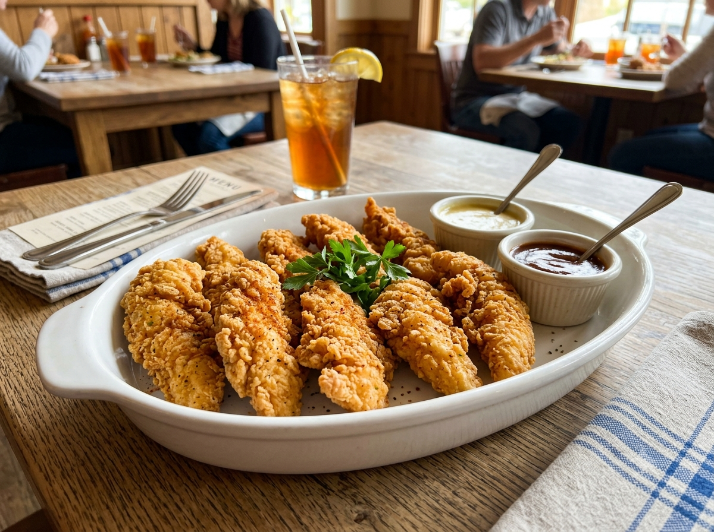

Home
Chicken Tenders

Crispy chicken tenders, crispy on the outside and juicy on the inside
Ingredients
- 1 kg of chicken breast
- 1 kg of flour
- 1 teaspoon of salt
- 1 teaspoon of crushed black pepper
- 1 pinch of paprika
- ½ teaspoon of garlic powder
- 1 egg
- Whole black peppercorns
- Bay leaves
- Water
Instructions
- Slice the chicken breast according to your preference.
- Brine the sliced chicken with salt, black pepper, bay leaves, and enough water to fully cover the chicken.
- Let it sit for 30 minutes to 1 hour.
- While the chicken is brining, prepare two bowls for the coating.
- Place half of the flour in the first bowl. In the second bowl, place the remaining flour, then add 1 teaspoon of salt, 1 teaspoon of crushed black pepper, 1 pinch of paprika, and ½ teaspoon of garlic powder.
- For the wet batter, mix 1 egg, ⅓ cup of water, and ⅓ cup of flour.
- Coat each piece of chicken in the first bowl of flour, dip it into the wet batter, then coat it again in the second bowl. Repeat for the remaining chicken.
- Fry the chicken until golden brown.